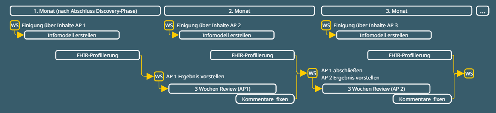

Seiteninhalt:
Um die Wechselschnittstelle so praxistauglich wie möglich zu gestalten, wird diese in Co-Creation zwischen der mio42, der gematik und interessierten Stakeholdern, in einem partnerschaftlichen und transparenten Prozess konzipiert und entwickelt. Zu den Stakeholdern gehören, unter anderem, Vertretende aus der Industrie, Leistungserbringende, Expert:innen für Digitalisierung und Interoperabilität im Gesundheitswesen und weitere Interessengruppen. In einer initialen Discovery- und Testphase wird in einem Regelturnus ein engmaschiger Austausch gepflegt, bei dem die Teilnehmenden praktisches Wissen zu Anwendungs- und Randfällen, zu den in PVS erhobenen Daten, zum Status Quo von Ex- und Importprozessen, sowie zu weiteren Anforderungen und Herausforderungen für die Wechselschnittstelle beisteuern.
Die Co-Creation findet im Rahmen der Discovery- und Testphase in Form von Workshops zur Erarbeitung und Evaluation der Konzepte für die Wechselschnittstelle, Statusberichten und Befragungen statt. In gemeinsamen Terminen werden Entwicklungsarbeiten und Arbeitspakete seitens mio42 vorgestellt und inhaltliche Fragen seitens der Industrie geklärt. Im Projektverlauf ist eine Testphase mit iterativen Entwicklungsschleifen eingeplant, um regelmäßig Feedback zu den aktuellen Projektständen bei den Teilnehmenden einzuholen und kurzfristig Anpassungen an der Konzeptionierung vornehmen zu können. So bleibt die Entwicklung zunächst flexibel und notwendige Änderungen können auch kurzfristig implementiert werden. Außerdem wird Raum für eine inhaltliche Diskussion gegeben, indem die Arbeitsstände der ersten beiden Arbeitspakete in Form von Informationsmodellen, sowie als FHIR Ressourcen bei simplifier, zur Verfügung gestellt werden, sodass sie durch die teilnehmenden Stakeholder kommentiert werden können. Dadurch kann gemeinsam frühzeitig der notwendige Anpassungs- und Optimierungsbedarf identifiziert werden, den die mio42 und die gematik umsetzen.
Während des engen Austausches in der Discovery- und Testphase wird die Basis für die weitere Entwicklung einer praxistauglichen Wechselschnittstelle geschaffen. Über die Testphase hinaus bleibt die mio42 im engen Austausch mit der Industrie in Form von Befragungen, Testimplementierungen und zur Kooperation im Rahmen spezifischer, fachbezogener Fragestellungen.
Die Co-Creation der Wechselschnittstelle ermöglicht durch den wertvollen Input aller Stakeholder einen Entwicklungsprozess nahe am praktischen Geschehen. Die mio42 analysiert den Input für und die Anforderungen an eine Wechselschnittstelle und berücksichtigt diese bei jedem Schritt des Projektes bei der Konzeptionierung und Spezifizierung. So kann eine performante, anwendungsnahe und praktikable Wechselschnittstelle entstehen.
Im Anschluss an die Discovery- und Testphase werden das Informationsmodell und die technische Spezifikation als Gesamtmodell ohne iterative Zwischenschritte (Workshops und Kommentierungen) fortgeführt. Dabei fließen die Erkenntnisse aus Gesprächen und Befragungen während der Discoveryphase sowie die Anmerkungen und Verbesserungsvorschläge der Kommentierung, sowie die Ergebnisse der Testphase als maßgeblicher Einflussfaktor in die weitere Erstellung ein. Anschließend wird das Informationsmodell und die technische Spezifikation als Gesamtmodelle erneut zur Kommentierung durch die Industrie zur Verfügung gestellt, um eine abschließende Evaluation und Verbesserung zu ermöglichen.
